Pengantar
Terminologi
Transaksi
Form 1721 A1
Membuat Form 1721 A1
Memodifikasi Form 1721 A1
Menghapus Form 1721 A1
Mengkonfirmasi Form 1721 A1
Menyetujui Form 1721 A1
Menolak Form 1721 A1
Membatalkan Form 1721 A1
Merestart Form 1721 A1
Konfigurasi
Tax Year
Memodifikasi
Memodifikasi Tax Year
Menghapus Tax Year
Membuat Tax Period Secara Masal
Tax Period
Membuat Tax Period
Memodifikasi Tax Period
Menghapus Tax Period
PTKP Category
PTKP Category adalah fitur yang digunakan untuk mencatat dan mengelola konfigurasi data kategori Penghasilan Tidak Kena Pajak (PTKP).
Penjelasan PTKP Category
HEADER
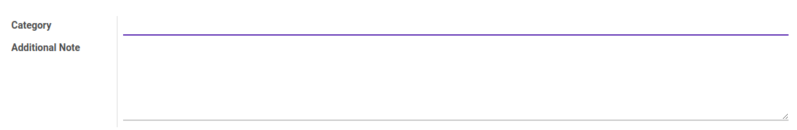
Category
Nama Kategori.
Additional Note
Catatan tambahan.
Membuat PTKP Category
A. INPUT
(Tidak ada instruksi khusus)
B. LANGKAH KERJA
- Buka menu Taxform -> Configuration -> PPh 21 -> PTKP Category. Abaikan jika sudah berada pada menu yang dimaksud.
- Klik tombol Create pada bagian atas-kiri form.
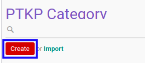
- Isi Category. Harus diisi.
- Isi Additional Note. Tidak harus diisi.
- Klik tombol Save pada bagian atas-kiri form.
C. OUTPUT
- Data PTKP Category akan terbuat.
Memodifikasi PTKP Category
A. INPUT
(Tidak ada instruksi khusus)
B. LANGKAH KERJA
- Buka menu Taxform -> Configuration -> PPh 21 -> PTKP Category. Abaikan jika sudah berada pada menu yang dimaksud.
- Buka data PTKP Category yang akan dimodifikasi. Abaikan jika data sudah dibuka.
- Klik tombol Edit pada bagian atas-kiri form.
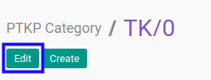
- Isi dan sesuaikan Category jika dibutuhkan. Harus diisi.
- Isi dan sesuaikan Additional Note jika dibutuhkan. Harus diisi.
- Klik tombol Save pada bagian atas-kiri form.
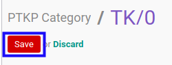
C. OUTPUT
- Data PTKP Category akan berubah sesuai dengan perubahan yang dilakukan.
Menghapus PTKP Category
A. INPUT
- User yang akan menghapus harus memiliki akses untuk menghapus PTKP Category.
B. LANGKAH KERJA
- Buka menu Taxform -> Configuration -> PPh 21 -> PTKP Category. Abaikan jika sudah berada pada menu yang dimaksud.
- Buka data PTKP Category yang akan dihapus. Abaikan jika data sudah dibuka.
- Klik tombol More pada bagian atas-tengah form.
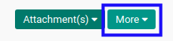
- Klik tombol Delete pada dropdown yang muncul ketika tombol More diklik.
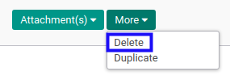
- Klik tombol Ok pada pop-up konfirmasi penghapusan yang muncul.
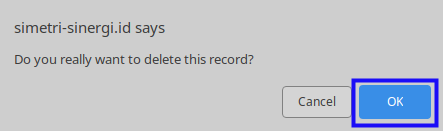
C. OUTPUT
- Data PTKP Category akan terhapus.
Tarif PTKP
Tarif PTKP adalah fitur yang digunakan untuk mencatat dan mengelola konfigurasi data tarif PTKP.
- Penjelasan Tarif PTKP
- Membuat Tarif PTKP
- Memodifikasi Tarif PTKP
- Menghapus Tarif PTKP
- Menambahkan Tarif Per Kategori PTKP
- Memodifikasi Tarif Per Kategori PTKP
- Menghapus Tarif Per Kategori PTKP
Penjelasan Tarif PTKP
Informasi pada Tarif PTKP dibagi menjadi beberapa bagian, yaitu:
HEADER
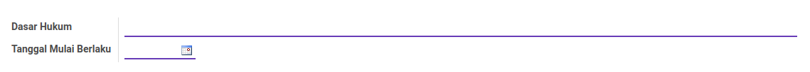
Dasar Hukum
Dasar hukum.
Tanggal Mulai Berlaku
Tanggal mulai berlaku.
TARIF PTKP
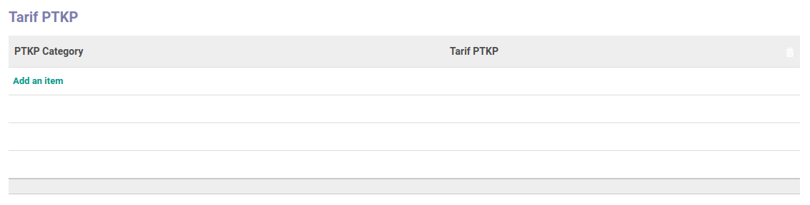
Pop Up Tarif PTKP saat add an item diklik.
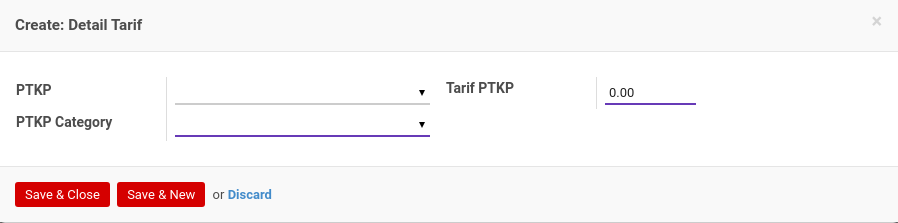
PTKP
PTKP.
PTKP Category
Kategori PTKP.
Tarif PTKP
Tarif PTKP.
Membuat Tarif PTKP
A. INPUT
(Tidak ada instruksi khusus)
B. LANGKAH KERJA
- Buka menu Taxform -> Configuration -> PPh 21 -> Tarif PTKP. Abaikan jika sudah berada pada menu yang dimaksud.
- Klik tombol Create pada bagian atas-kiri form.
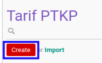
- Isi Dasar Hukum. Harus diisi.
- Pilih Tanggal Mulai Berlaku. Harus diisi.
- Tambah/Modifikasi/Hapus Tarif PTKP. Ulangi langkah ini sampai Tarif PTKP sesuai dengan keinginan.
- Klik tombol Save pada bagian atas-kiri form.
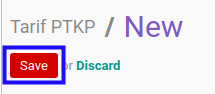
C. OUTPUT
- Data Tarif PTKP akan terbuat.
Memodifikasi Tarif PTKP
A. INPUT
(Tidak ada instruksi khusus)
B. LANGKAH KERJA
- Buka menu Taxform -> Configuration -> PPh 21 -> Tarif PTKP. Abaikan jika sudah berada pada menu yang dimaksud.
- Buka data Tarif PTKP yang akan dimodifikasi. Abaikan jika data sudah dibuka.
- Klik tombol Edit pada bagian atas-kiri form.
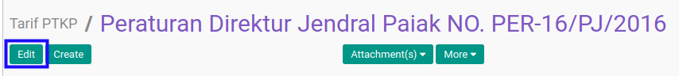
- Isi dan sesuaikan Dasar Hukum jika dibutuhkan. Harus diisi.
- Pilih dan sesuaikan Tanggal Mulai Berlaku jika dibutuhkan. Harus diisi.
- Tambah/Modifikasi/Hapus Tarif PTKP. Ulangi langkah ini sampai Tarif PTKP sesuai dengan keinginan.
- Klik tombol Save pada bagian atas-kiri form.
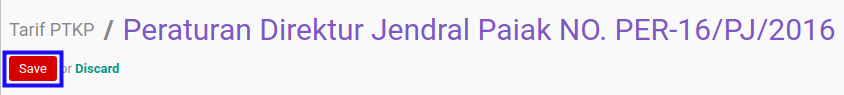
C. OUTPUT
- Data Tarif PTKP akan berubah sesuai dengan perubahan yang dilakukan.
Menghapus Tarif PTKP
A. INPUT
- User yang akan menghapus harus memiliki akses untuk menghapus Tarif PTKP.
B. LANGKAH KERJA
- Buka menu Taxform -> Configuration -> PPh 21 -> Tarif PTKP. Abaikan jika sudah berada pada menu yang dimaksud.
- Buka data Tarif PTKP yang akan dihapus. Abaikan jika data sudah dibuka.
- Klik tombol More pada bagian atas-tengah form.

- Klik tombol Delete pada dropdown yang muncul ketika tombol More diklik.

- Klik tombol Ok pada pop-up konfirmasi penghapusan yang muncul.

C. OUTPUT
- Data Tarif PTKP akan terhapus.
Menambahkan Tarif Per Kategori PTKP
(Instruksi kerja ini merupakan sub instruksi dari (1) Membuat Tarif PTKP, atau (2) Memodifikasi Tarif PTKP. Instruksi kerja ini tidak bisa berdiri sendiri)
A. INPUT
(Tidak ada instruksi khusus)
B. LANGKAH KERJA
- Klik label Add an Item pada bagian atas-kiri tabel Tarif PTKP
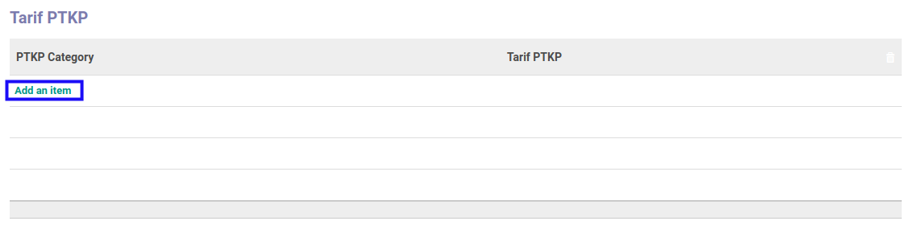
Pop-up Detail Tarif akan muncul.
- Pilih PTKP. Tidak harus diisi.
- Pilih PTKP Category. Harus diisi.
- Isi Tarif PTKP. Harus diisi.
- Klik tombol Save & Close pada bagian bawah-kiri pop-up Detail Tarif untuk menyimpan data. Klik tombol Save & New pada bagian bawah-kiri pop-up Detail Tarif untuk menyimpan data dan menambahkan data baru.
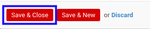
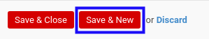
- Ulangi langkah ke-2 jika pada langkah ke-5 tombol Save & New yang dipilih.
- Lanjutkan langkah ke-5 instruksi kerja Membuat Tarif PTKP atau langkah ke-6 instruksi kerja Memodifikasi Tarif PTKP.
C. OUTPUT
(Tidak ada instruksi khusus)
Memodifikasi Tarif Per Kategori PTKP
(Instruksi kerja ini merupakan sub instruksi dari (1) Membuat Tarif PTKP, atau (2) Memodifikasi Tarif PTKP. Instruksi kerja ini tidak bisa berdiri sendiri)
A. INPUT
(Tidak ada instruksi khusus)
B. LANGKAH KERJA
- Buka data Tarif PTKP yang akan dimodifikasi.
- Pilih dan sesuaikan PTKP jika dibutuhkan. Tidak harus diisi.
- Pilih dan sesuaikan PTKP Category jika dibutuhkan. Harus diisi.
- Isi dan sesuaikan Tarif PTKP jika dibutuhkan. Harus diisi.
- Klik tombol Save pada bagian bawah-kiri form.
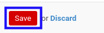
- Lanjutkan langkah ke-5 instruksi kerja Membuat Tarif PTKP atau langkah ke-6 instruksi kerja Memodifikasi Tarif PTKP.
C. OUTPUT
(Tidak ada instruksi khusus)
Menghapus Tarif Per Kategori PTKP
(Instruksi kerja ini merupakan sub instruksi dari (1) Membuat Tarif PTKP, atau (2) Memodifikasi Tarif PTKP. Instruksi kerja ini tidak bisa berdiri sendiri)
A. INPUT
(Tidak ada instruksi khusus)
B. LANGKAH KERJA
- Klik icon tempat sampah pada bagian kanan data Tarif PTKP yang akan dihapus.
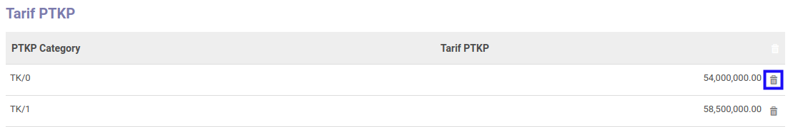
- Lanjutkan langkah ke-5 instruksi kerja Membuat Tarif PTKP atau langkah ke-6 instruksi kerja Memodifikasi Tarif PTKP.
C. OUTPUT
(Tidak ada instruksi khusus)
Biaya Jabatan
Biaya Jabatan adalah fitur yang digunakan untuk mencatat dan mengelola konfigurasi data biaya jabatan.
Penjelasan Biaya Jabatan
HEADER
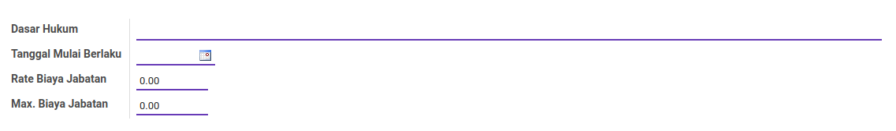
Dasar Hukum
Dasar hukum yang digunakan.
Tanggal Mulai Berlaku
Tanggal mulai berlaku biaya jabatan.
Rate Biaya Jabatan
Angka rate.
Max. Biaya Jabatan
Jumlah maksimal biaya jabatan.
Membuat Biaya Jabatan
A. INPUT
(Tidak ada instruksi khusus)
B. LANGKAH KERJA
- Buka menu Taxform -> Configuration -> PPh 21 -> Biaya Jabatan. Abaikan jika sudah berada pada menu yang dimaksud.
- Klik tombol Create pada bagian atas-kiri form.
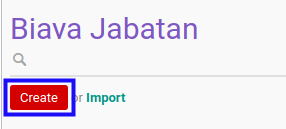
- Isi Dasar Hukum. Harus diisi.
- Pilih Tanggal Mulai Berlaku. Harus diisi.
- Isi Rate Biaya Jabatan. Harus diisi.
- Isi Max. Biaya Jabatan. Harus diisi.
- Klik tombol Save pada bagian atas-kiri form.
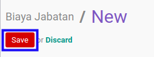
C. OUTPUT
- Data biaya jabatan akan terbuat.
Memodifikasi Biaya Jabatan
A. INPUT
(Tidak ada instruksi khusus)
B. LANGKAH KERJA
- Buka menu Taxform -> Configuration -> PPh 21 -> Biaya Jabatan. Abaikan jika sudah berada pada menu yang dimaksud.
- Buka data Biaya Jabatan yang akan dimodifikasi. Abaikan jika data sudah dibuka.
- Klik tombol Edit pada bagian atas-kiri form.
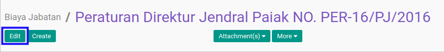
- Isi dan sesuaikan Dasar Hukum jika dibutuhkan. Harus diisi.
- Pilih dan sesuaikan Tanggal Mulai Berlaku jika dibutuhkan. Harus diisi.
- Isi dan sesuaikan Rate Biaya Jabatan jika dibutuhkan. Harus diisi.
- Isi dan sesuaikan Max. Biaya Jabatan jika dibutuhkan. Harus diisi.
- Klik tombol Save pada bagian atas-kiri form.
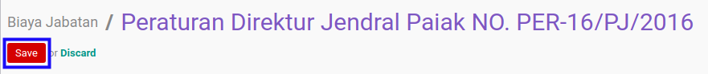
C. OUTPUT
- Data Biaya Jabatan akan berubah sesuai dengan perubahan yang dilakukan.
Menghapus Biaya Jabatan
A. INPUT
- User yang akan menghapus harus memiliki akses untuk menghapus Biaya Jabatan.
B. LANGKAH KERJA
- Buka menu Taxform -> Configuration -> PPh 21 -> Biaya Jabatan. Abaikan jika sudah berada pada menu yang dimaksud.
- Buka data Biaya Jabatan yang akan dihapus. Abaikan jika data sudah dibuka.
- Klik tombol More pada bagian atas-tengah form.
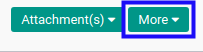
- Klik tombol Delete pada dropdown yang muncul ketika tombol More diklik.
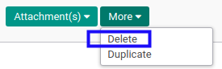
- Klik tombol Ok pada pop-up konfirmasi penghapusan yang muncul.
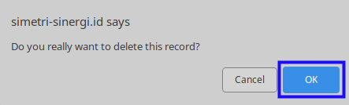
C. OUTPUT
- Data Biaya Jabatan akan terhapus.
NPWP Rate Modifier
NPWP Rate Modifier adalah fitur yang digunakan untuk mencatat dan mengelola konfigurasi data NPWP Rate Modifier.
- Penjelasan NPWP Rate Modifier
- Membuat NPWP Rate Modifier
- Memodifikasi NPWP Rate Modifier
- Menghapus NPWP Rate Modifier
Penjelasan NPWP Rate Modifier
HEADER
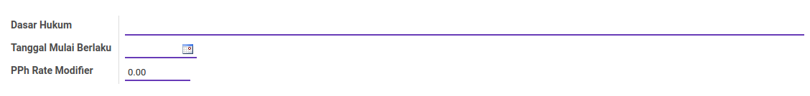
Dasar Hukum
Dasar hukum yang digunakan.
Tanggal Mulai Berlaku
Tanggal mulai berlaku.
PPh Rate Modifier
Angka rate.
Membuat NPWP Rate Modifier
A. INPUT
(Tidak ada instruksi khusus)
B. LANGKAH KERJA
- Buka menu Taxform -> Configuration -> PPh 21 -> NPWP Rate Modifier. Abaikan jika sudah berada pada menu yang dimaksud.
- Klik tombol Create pada bagian atas-kiri form.
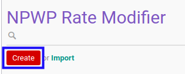
- Isi Dasar Hukum. Harus diisi.
- Pilih Tanggal Mulai Berlaku. Harus diisi.
- Isi PPh Rate Modifier. Harus diisi.
- Klik tombol Save pada bagian atas-kiri form.
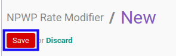
C. OUTPUT
- Data NPWP Rate Modifier akan terbuat.
Memodifikasi NPWP Rate Modifier
A. INPUT
(Tidak ada instruksi khusus)
B. LANGKAH KERJA
- Buka menu Taxform -> Configuration -> PPh 21 -> NPWP Rate Modifier. Abaikan jika sudah berada pada menu yang dimaksud.
- Buka data NPWP Rate Modifier yang akan dimodifikasi. Abaikan jika data sudah dibuka.
- Klik tombol Edit pada bagian atas-kiri form.
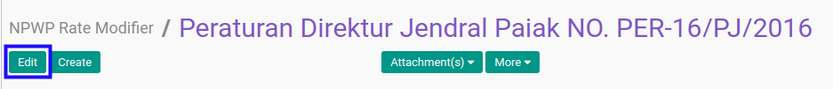
- Isi dan sesuaikan Dasar Hukum jika dibutuhkan. Harus diisi.
- Pilih dan sesuaikan Tanggal Mulai Berlaku jika dibutuhkan. Harus diisi.
- Isi dan sesuaikan PPh Rate Modifier jika dibutuhkan. Harus diisi.
- Klik tombol Save pada bagian atas-kiri form.
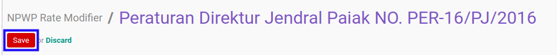
C. OUTPUT
- Data NPWP Rate Modifier akan berubah sesuai dengan perubahan yang dilakukan.
Menghapus NPWP Rate Modifier
A. INPUT
- User yang akan menghapus harus memiliki akses untuk menghapus NPWP Rate Modifier.
B. LANGKAH KERJA
- Buka menu Taxform -> Configuration -> PPh 21 -> NPWP Rate Modifier. Abaikan jika sudah berada pada menu yang dimaksud.
- Buka data NPWP Rate Modifier yang akan dihapus. Abaikan jika data sudah dibuka.
- Klik tombol More pada bagian atas-tengah form.
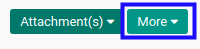
- Klik tombol Delete pada dropdown yang muncul ketika tombol More diklik.
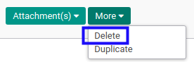
- Klik tombol Ok pada pop-up konfirmasi penghapusan yang muncul.
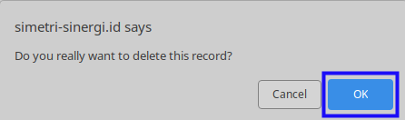
C. OUTPUT
- Data NPWP Rate Modifier akan terhapus.
Tarif PPh 21
Tarif PPh 21 adalah fitur yang digunakan untuk mencatat dan mengelola konfigurasi data tarif PPh 21.
- Penjelasan Tarif PPh 21
- Membuat Tarif PPh 21
- Memodifikasi Tarif PPh 21
- Menghapus Tarif PPh 21
- Menambahkan Minimum Income
- Memodifikasi Minimum Income
- Menghapus Minimum Income
Penjelasan Tarif PPh 21
Informasi pada Tarif PPh 21 dibagi menjadi beberapa bagian, yaitu:
HEADER
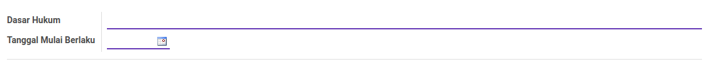
Dasar Hukum
Dasar hukum.
Tanggal Mulai Berlaku
Tanggal mulai berlaku.
MIN. INCOME
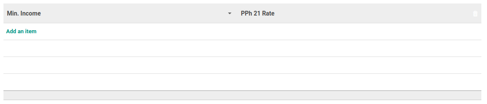
Min. Income
Minimum Income.
PPh 21 Rate
PPh 21 Rate.
Membuat Tarif PPh 21
A. INPUT
(Tidak ada instruksi khusus)
B. LANGKAH KERJA
- Buka menu Taxform -> Configuration -> PPh 21 -> Tarif PPh 21. Abaikan jika sudah berada pada menu yang dimaksud.
- Klik tombol Create pada bagian atas-kiri form.
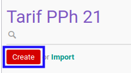
- Isi Dasar Hukum. Harus diisi.
- Pilih Tanggal Mulai Berlaku. Harus diisi.
- Tambah/Modifikasi/Hapus Min. Income. Ulangi langkah ini sampai Min. Income sesuai dengan keinginan.
- Klik tombol Save pada bagian atas-kiri form.
C. OUTPUT
- Data Tarif PPh 21 akan terbuat.
Memodifikasi Tarif PPh 21
A. INPUT
(Tidak ada instruksi khusus)
B. LANGKAH KERJA
- Buka menu Taxform -> Configuration -> PPh 21 -> Tarif PPh 21. Abaikan jika sudah berada pada menu yang dimaksud.
- Buka data Tarif PPh 21 yang akan dimodifikasi. Abaikan jika data sudah dibuka.
- Klik tombol Edit pada bagian atas-kiri form.
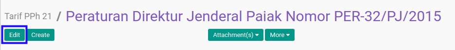
- Isi dan sesuaikan Dasar Hukum jika dibutuhkan. Harus diisi.
- Pilih dan sesuaikan Tanggal Mulai Berlaku jika dibutuhkan. Harus diisi.
- Tambah/Modifikasi/Hapus Min. Income. Ulangi langkah ini sampai Min. Income sesuai dengan keinginan.
- Klik tombol Save pada bagian atas-kiri form.
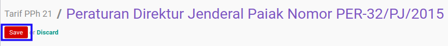
C. OUTPUT
- Data Tarif PPh 21 akan berubah sesuai dengan perubahan yang dilakukan.
Menghapus Tarif PPh 21
A. INPUT
- User yang akan menghapus harus memiliki akses untuk menghapus Tarif PPh 21.
B. LANGKAH KERJA
- Buka menu Taxform -> Configuration -> PPh 21 -> Tarif PPh 21. Abaikan jika sudah berada pada menu yang dimaksud.
- Buka data Tarif PPh 21 yang akan dihapus. Abaikan jika data sudah dibuka.
- Klik tombol More pada bagian atas-tengah form.
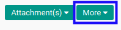
- Klik tombol Delete pada dropdown yang muncul ketika tombol More diklik.
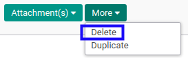
- Klik tombol Ok pada pop-up konfirmasi penghapusan yang muncul.

C. OUTPUT
- Data Tarif PPh 21 akan terhapus.